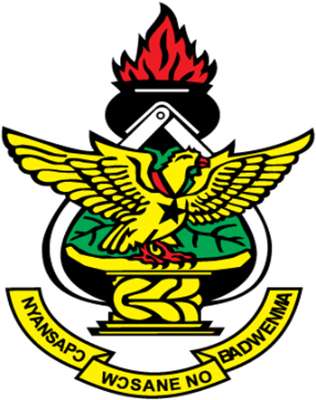
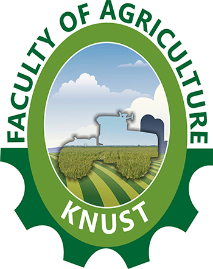

This tool assists in doing cluster analysis of molecular data.
This web app is a part of the Project Genaxy final-year project work.
This Web app helps in doing clustering analysis using Jaccard, Simple Matching and Dice distance measures. It also gives out the visualisation of the clustering analysis output in the form of a dendrogram, which can be downloaded if preferred. Please see the Help and About page for more detailed information on how to use the app.